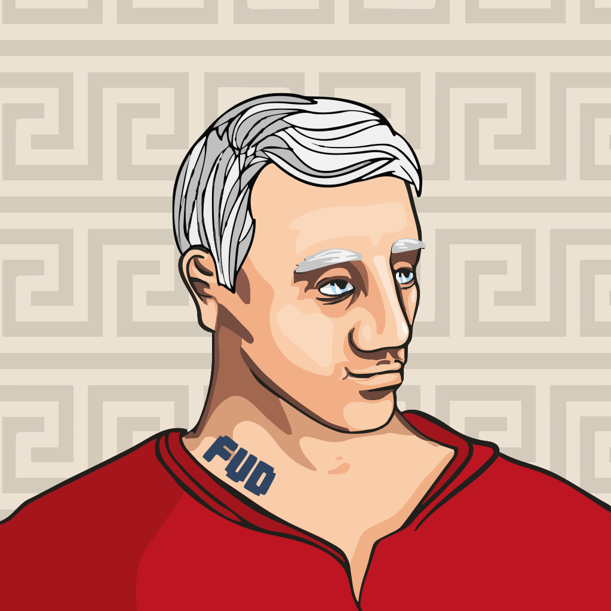
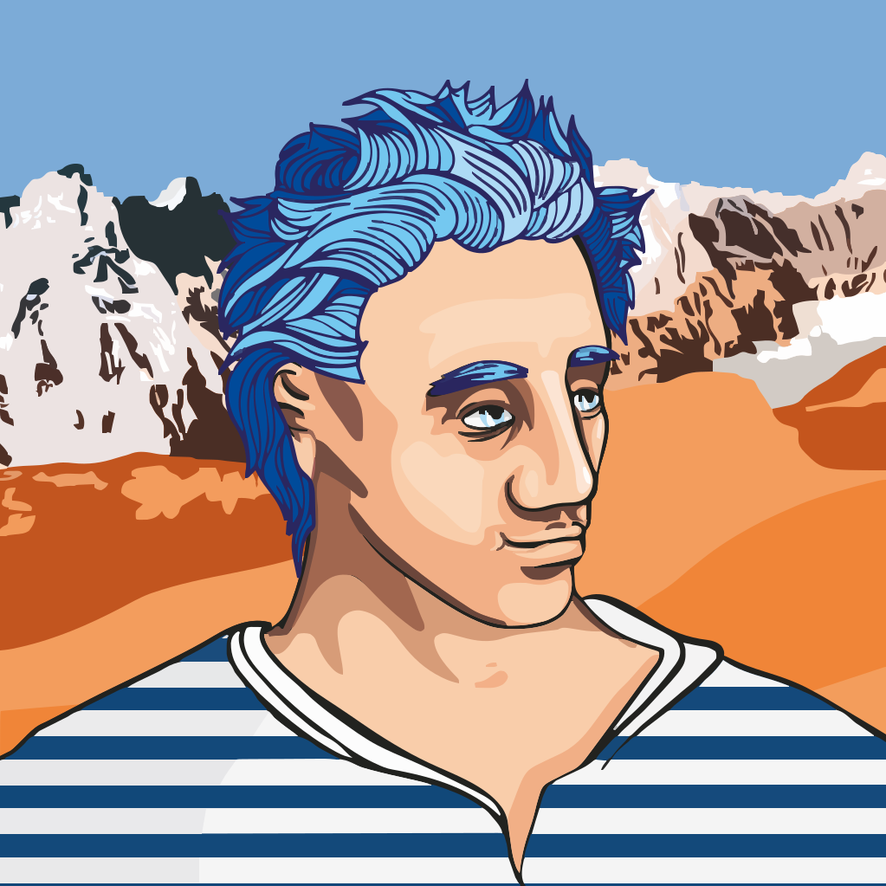
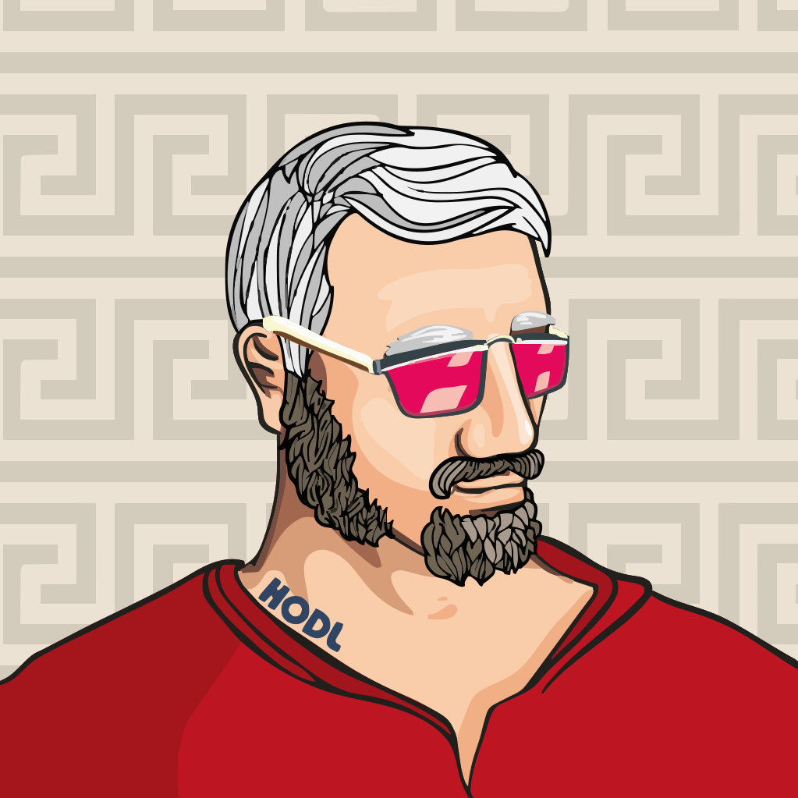

Projet personnel · 2023 · Illustration & système génératif
Deux collections NFT, dessinées à la main.
En 2023, j'ai conçu deux collections d'avatars génératifs : chaque élément est
dessiné, puis découpé en calques qu'un script assemble par milliers. La bulle NFT s'est effondrée
avant la sortie. Les dessins, eux, sont restés — voici leur histoire, du premier croquis au système.
2 collections~2 millions de combinaisons300 pièces assemblées iciDessin · Illustrator · Photoshop · Python
Le Nautify — image de couverture de la collection Nautilus. Encre sur papier, puis mise en couleur numérique.
01
Les bustes grecs
Mars — mai 2023. Le point de départ : un visage de statue, réinterprété en buste contemporain.
L'idée est de garder un seul personnage et de le faire varier à l'infini par ses attributs.
1 · Le premier croquis
Tout commence au crayon : un buste aux traits de statue antique, regard baissé,
marinière. C'est ce dessin qui fixe la pose — tous les éléments de la collection
devront ensuite s'y ajuster au pixel près.
2 · Les variations, dessinées sur tirages
Avant de passer au vecteur, j'imprime le buste et je dessine directement par-dessus :
chapeaux, bonnets, barbes, lunettes, coiffures. Une façon rapide de tester ce qui « tient »
sur le personnage avant d'investir des heures dans chaque élément.
ChapeauxBarbesLunettesCoiffuresMoustaches
3 · Du crayon au vecteur
Six versions successives du même fichier Illustrator : le croquis scanné sert de guide,
puis viennent le contour, la couleur, les carnations, le fond à méandres grecs et le buste final.
Croquis scannéContourCouleurCarnationsMéandresBuste final
4 · La planche d'éléments
Sur un second plan de travail, tous les attributs sont dessinés et calés sur le buste :
lunettes, barbes, coiffures, chapeaux — et une série de tatouages en argot crypto
(GM, HODL, WAGMI, FOMO, FUD, LFG, SAFU), clin d'œil à l'univers de la collection.
5 · L'assemblage
Chaque élément est exporté sur un calque transparent de même format, puis empilé dans un
ordre fixe. Certains attributs sont rares, d'autres absents : c'est ce qui donne à chaque
pièce sa personnalité.
967 680 combinaisons possibles · assemblées en vectoriel (SVG)

GREEK-007 · SVG

GREEK-023 · SVG

GREEK-051 · SVG
02
Nautilus
Juin — septembre 2023. Le buste devient créature des profondeurs : le même principe de
calques, mais un univers entièrement nouveau, plus libre, plus organique — et le Nautify
comme vaisseau-amiral de la collection.
1 · Le pivot : des bustes aux créatures
Les premiers croquis gardent la silhouette du buste mais l'étirent, la fissurent, la
transforment en organisme. Puis apparaît le plongeur : casque, tuyaux, scaphandre —
le personnage qui deviendra le modèle de base.
Chaque modèle repose sur un calque de trait dessiné à part. Le trait reste
identique ; tout le reste change — corps, peau, accessoires, fond.
Basculez pour voir la ligne seule, puis la pièce terminée.
3 · Le système
Cinq modèles de base, chacun avec ses propres calques. L'assemblage suit des règles
précises pour que chaque créature reste crédible : un seul appareil respiratoire, un
seul casque — certains éléments sont des variantes exclusives les uns des autres.
Fond+ corps+ détails+ trait+ accessoires
La collection — 200 Nautilus
1 031 760 combinaisons possibles · 5 modèles
Épilogue
La bulle a éclaté. Les dessins sont restés.
Le marché des NFT s'est effondré avant la mise en vente. Plutôt que de laisser dormir
le travail, je l'ai réassemblé pour ce site : deux systèmes complets, prêts à générer
des centaines de milliers de pièces uniques — et la preuve qu'un trait peut devenir tout un monde.